关于 Cookie、Session、LocalStorage、Cache-Control
Cookie 存在的问题
用户可以随意篡改 Cookie
Session 与 Cookie 的关系
一般来说，Session 基于 Cookie 来实现。因为需要将 SessionID（随机数）通过 Cookie 发给客户端。
Cookie
- 服务器通过 Set-Cookie 头给客户端一串字符串
- 客户端每次访问相同域名的网页时，必须带上这段字符串
- 客户端要在一段时间内保存这个Cookie
- Cookie 默认在用户关闭页面后就失效，后台代码可以任意设置 Cookie 的过期时间
大小大概在 4kb 以内
前端永远不要读，写 cookie!!!!
Session（不翻译）
- 将 SessionID（随机数）通过 Cookie 发给客户端
- 客户端访问服务器时，服务器读取 SessionID
- 服务器有一块内存（哈希表）保存了所有 session
- 通过 SessionID 我们可以得到对应用户的隐私信息，如 id、email
- 这块内存（哈希表）就是服务器上的所有 session
session 的缺点就是占内存， 而 cookie 不占内存
LocalStorage
html5 提供的 API。
存值方法如下图
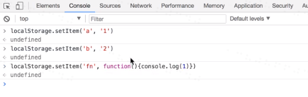
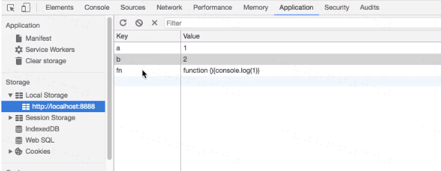
注意：上述方法只能存储 string。图片2中貌似存入了函数，实际上存的是 string，只不过是将函数转化成了 string。
假如存入了 Object 对象。如下图：
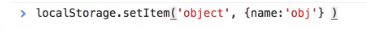
结果存储的是：
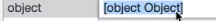
(因为 任何对象.toString() 都会变成[Object Object])
解决办法如下：
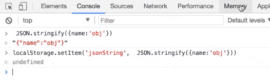
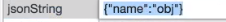
问题： cookie 和 localStorage 的区别是什么？
答： cookie 在每次请求的时候都会带给服务器，但 HTTP 不会带上 LocalStorage 的值。
cookie 的最大储存量为 4kb。localStorage 最大存储量为 5Mb 左右（每个浏览器不一样）。
取值方法如下图
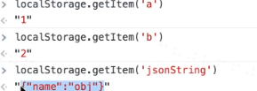
清空
localStorage.clear()
localStorage 用法
对于 windows 用户来说， localStorage 存在 C 盘的文件里(持久化存储)，而不是存在页面中。
localStorage 最典型的应用，记录下有没有提示用户。假设一个网站改版了，弹出窗口提示用户网站改版.代码如下：
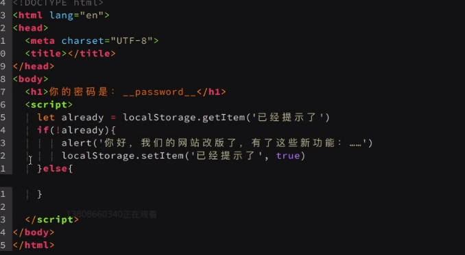
- LocalStorage 跟 HTTP 无关
- HTTP 不会带上 LocalStorage 的值
- 只有相同域名的页面才能互相读取 LocalStorage（没有同源那么严格）
- 每个域名 localStorage 最大存储量为 5Mb 左右（每个浏览器不一样）
- 举例如下(122M)：
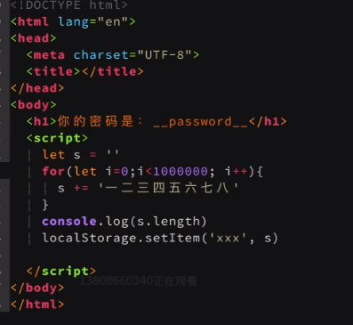
结果出现如下错误：
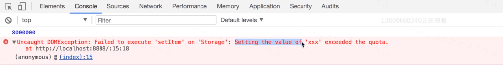
- 举例如下(122M)：
- 常用场景：记录有没有提示过用户（没有用的信息，不能记录密码）
- LocalStorage 永久有效，除非用户清理缓存
- 举例：Chrome 浏览器按住 ctrl+shift+delete,勾选”cookie 及其他网站数据（其中’其他网站数据’中就包含localStorage）
sessionStorage（会话存储）
1、2、3、4 同上
- SessionStorage 在用户关闭页面（会话结束）后就失效。
sessionStorage 的使用方法
- 使用法法如下：
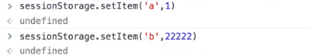
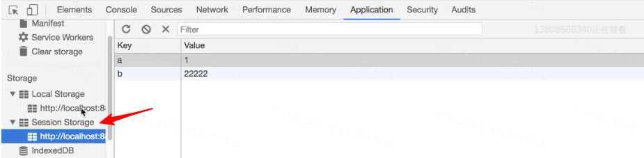
注意：sessionStorage 与 localstorage 的区别在于：localStorage 不会自动过期，但是 sessionStorage 会自动过期（关闭页面的时候就会过期清空）。
HTTP 缓存
Cache-Control(Web 性能优化)
- 举例如下：
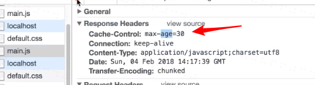
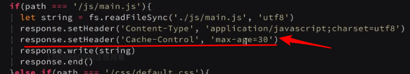
“Cache-Control:max-age=30”表示 30s 内不要再次请求。
过程图如下：
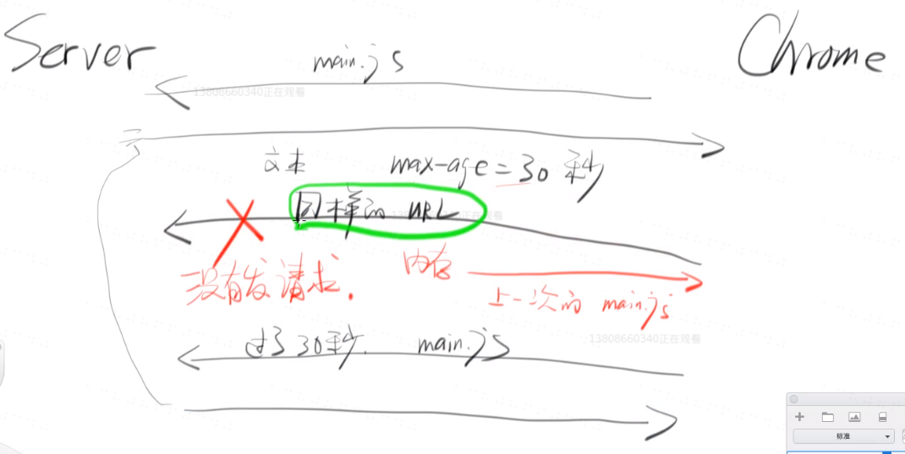
如何更新缓存
如果所有的东西都缓存一天或者xx秒，那么很难获得最新的网页。
解决办法：
首页（index.html)不要设置缓存。假设有一个js设置的 10 年不更新,已知只有相同的 URL 才会用之前的缓存，那么只要让 url 不同即可（比如添加参数），如下图：
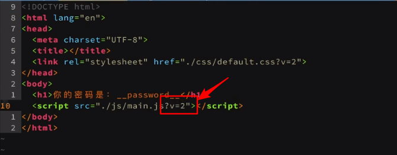
Expire
Expire 类似 Cache-Control，但是它是设置时间点过期，而 Cache-Control 是设置的多长时间过期。如果用户的本地时间异常（假设设置的时间点在十年之后），那么则有可能永远过期。
ETag
首先讲讲 md5 ，md5 是摘要算法（把一个文件变成字符串，如果文件有任何地方的改动，那么其对应的 md5 差异会很大）。md5 的一个很大的特征就是如果内容的差异越小，那么算出的结果差异就越大。
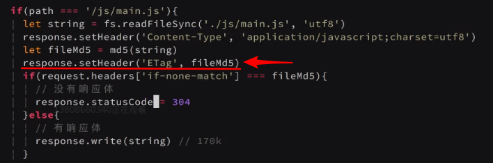
Last-Modified
在浏览器第一次请求某一个URL时，服务器端的返回状态会是200，内容是你请求的资源，同时有一个Last-Modified的属性标记(HttpReponse Header)此文件在服务期端最后被修改的时间，格式类似这样：1
Last-Modified:Tue, 24 Feb 2009 08:01:04 GMT
客户端第二次请求此URL时，根据HTTP协议的规定，浏览器会向服务器传送If-Modified-Since报头(HttpRequest Header)，询问该时间之后文件是否有被修改过：1
If-Modified-Since:Tue, 24 Feb 2009 08:01:04 GMT
如果服务器端的资源没有变化，则自动返回HTTP304（NotChanged.）状态码，内容为空，这样就节省了传输数据量。当服务器端代码发生改变或者重启服务器时，则重新发出资源，返回和第一次请求时类似。从而保证不向客户端重复发出资源，也保证当服务器有变化时，客户端能够得到最新的资源。
注：如果If-Modified-Since的时间比服务器当前时间(当前的请求时间request_time)还晚，会认为是个非法请求
缓存与 304 的区别
- 缓存没有请求。
- 304 有请求，有响应，但是响应没有第四部分。
注意:最新版的 Chrome 已经把 view source 按钮删了。
测试
Cookie 和 Session 的区别
答：
Cookie 保存在客户端，每次都随请求发送给 Server
Session 保存在 Server 的内存里，其 Session ID 是通过 Cookie 发送给客户端的Cookie 和 LocalStorage 的区别
答：
1) LocalStorage 不会随 HTTP 发给 Server
2) LocalStorage 的大小限制比 Cookie 大多了LocalStorage 和 SessionStorage 的区别
答：
localStorage 不会自动过期，但是 sessionStorage 会自动过期（关闭页面的时候就会过期清空）Cookie 如何设置过期时间？如何删除 Cookie？
答：
前端设置
document.cookie(name=alias; expires=${过期时间};)
2.服务器设置 node示例：
response.setHeader(“Set-Cookie’,‘name=alias; expires=${过期时间}’)
删除：
1.前端删除
document.cookie(name=alias; expires=${当前时间的前一天};)
2.node
response.setHeader(“Set-Cookie’,‘name=alias; expires=${当前时间的前一天}’)Cache-Control: max-age=1000 缓存 与 ETag 的「缓存」有什么区别？
答：
Cache-Control 直接不发请求。而 ETag 要发请求才行。